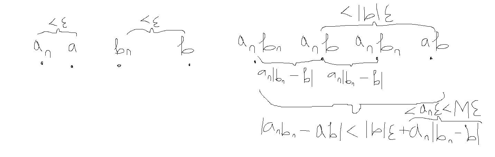
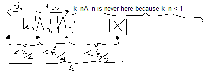
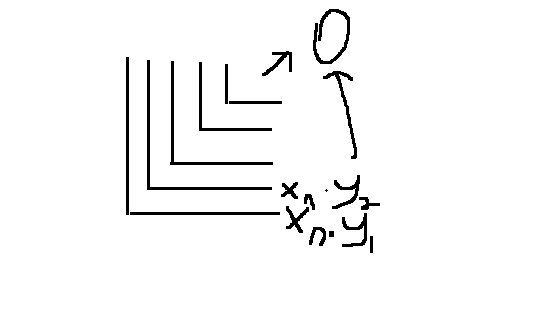

Algebraic and Order Limit Theorems Exercises
Defintion 2.3.1. A sequence $(x_n)$ is bounded if there exists a number $M > 0$ such that $|x_n| \leq M$ for all $n \in \mathbb{N}$Theorem 2.3.2. Every convergence sequence is buonded
Suppose $(a_n)$ is a sequence which converges to some real number $a$. Then, by the definition of convergence, it is known that for all $\epsilon > 0$, there exists $N \in \mathbb{N}$ such that for any $n \geq N$ it follows that $|a_n - a| < \epsilon$. Lock $\epsilon$ to some value, say, $\epsilon = 1$. Define $M = |a| + \epsilon + \sum_{i=1}^{N-1} |a_n|$. This means $M \geq |a| + \epsilon$ and for all $n < N$, $M \geq |a_n|$. For $n \geq N$, by the triangle inequality, it is known that $|a_n| = |a_n - a + a| \leq |a_n - a| + |a| < \epsilon + |a|$ therefore $|a_n| \leq M$ For $n < N$, it is known that $|a_n| \leq M$. Therefore it can be concluded that $(a_n)$ is bounded because $|a_n| \leq M$ for all natural $n$.
Theorem 2.3.3 (Algebraic Limit Theorem). Let $\lim a_n = a$ and $\lim b_n = b$. Then,
(i) $\lim(ca_n) = ca$, for all $c \in \mathbb{R}$;
(ii) $\lim(a_n + b_n) = a + b$;
(iii) $\lim(a_n b_n) = ab$;
(iv) $\lim(\frac{a_n}{b_n}) = \frac{a}{b}$, provided $b \neq 0$.
Proof:
(i) It is clear that when $c = 0$, then every term $ca_n$ is zero and $ca$ is also zero and so for any $\epsilon > 0, n \in \mathbb{N}$, $|ca_n - ca| = 0 < \epsilon$. When $c \neq 0$, it is known that $|c| > 0$, therefore for all $\epsilon > 0$, $\frac{\epsilon}{|c|} > 0$ and so there exists $N \in \mathbb{N}$ such that for all $n \geq N$, $|a_n - a| < \frac{\epsilon}{|c|}$ which means $|c||a_n - a| = |ca_n - ca| < \epsilon$.
(ii) For all $\epsilon > 0$, it is known that there exist $N_1, N_2 \in \mathbb{N}$ such that for any $n_1 \geq N_1$ and $n_2 \geq N_2$, $|a_{n_1} - a| < \frac{\epsilon}{2}$ and $|b_{n_2} - b| < \frac{\epsilon}{2}$. Then you can take $N = \max \{ N_1, N_2 \}$ therefore for any $n \geq N$, $n \geq N_1$ and $n \geq N_2$ therefore $|a_n - a| < \frac{\epsilon}{2}$ and $|b_n - b| < \frac{\epsilon}{2}$. Then by the triangle inequality $$ \begin{align*} |a_n + b_n - (a + b)| &= |(a_n - a) + (b_n - b)| \\ &\leq |a_n - a| + |b_n - b| \\ &< \epsilon \end{align*} $$. So $|a_n + b_n - (a + b)| < \epsilon$.
(iii) For all $\epsilon > 0$, it is known that there exist $N_1, N_2 \in \mathbb{N}$ such that for any $n_1 \geq N_1$ and $n_2 \geq N_2$, $|a_{n_1} - a| < \epsilon$ and $|b_{n_2} - b| < \epsilon$. Take $N = \max \{ N_1, N_2 \}$ therefore for all $n \geq N$, $|a_n - a| < \epsilon$ and $|b_n - b| \leq \epsilon$ therefore $|b| |a_n - a| = |a_nb - ab| \leq |b|\epsilon$. Then it is also known that $|a_n||b_n - b| = |a_nb_n - a_nb| \leq |a_n|\epsilon$ therefore, by the triangle inequality, it is known that $$|(a_nb_n - a_nb) + (a_nb - ab)| \leq |a_nb - ab| + |a_nb_n - a_nb| \leq \epsilon(|a_n| + |b|)$$. Then the first expression in the inequality from before can be simplified to $$|(a_nb_n - a_nb) + (a_nb - ab)| = |a_n(b + b_n - b) - ab| = |a_nb_n - ab|$$ therefore it is known that $|a_nb_n - ab| < \epsilon(|a_n| + |b|)$ yet since $(a_n)$ is bounded, we know there exists some $M > 0$ such that $|a_n| < M$ for all $n$ and so $|a_nb_n - ab| < \epsilon(M + |b|)$. The purpose of using $M$ is so that the constant scalar for $\epsilon$ does not depend on the current term but instead on the sequence as a whole. Notice that it is not of any concern when $b = 0$ or $a_n = 0$. So you can always choose some $\epsilon > 0$ which means $\frac{\epsilon}{M + |b|} > 0$ therefore by the proof, $|a_nb_n - ab| < \epsilon$.
But this is the picture I first drew for the intuition of this proof:

Note that the two $a_n b_n$s just illustrates the two possible places that $a_n b_n$ can be depending on if $b_n$ is on the left or right of $b$.
(iv) You can just choose enough of an epsilon so that the terms of $b_n$ cannot be zero, I guess. Since $(b_n)$ converges to $b$, you can choose $0 < \epsilon < |\frac{b}{2}|$ therefore any natural $n$ which satisfy $|b_n - b| < \epsilon$ means that $|b_n - b| < |\frac{b}{2}|$. Now you can do: $$\begin{align} |b_n| &= |b| - (|b| - |b_n|) \\ &\geq |b| - |b - b_n| && \text{ since $|b| - |b_n| \leq |b - b_n|$} \\ &> |b| - |\frac{b}{2}| && \text{ since $|b - b_n| < |\frac{b}{2}|$} \\ &> |\frac{b}{2}| \end{align} $$ Call the natural number where every natural number satisfy the condition above as $Q$. In other words, for all $q \geq Q$, then $|b_q| > |b/2|$.
This means, as a sequence, $\frac{a_n}{b_n}$ for all $n \geq Q$ is a completely valid sequence since all the terms' denominator are non-zero. If you can prove that $\frac{1}{b_n}$ for all $n \geq Q$ converges to $\frac{1}{b}$, then by the previous algebraic theorems, then $\frac{a_n}{b_n}$ for all $n \geq Q$ converges to $\frac{a}{b}$. Remember from earlier that, for any $n \geq Q$, $|b_n| > |\frac{a}{b}|$ so you can take $K = \inf \{ |b_k| | k \geq Q \}$ and know $K \geq |\frac{b}{2}|$. By the way, have we proved that before in the book? If every element in a set is greater than a certain amount, it's infimum is greater than or equal to that amount. Regardless, that will be an obvious assumption here. Anyway, this means $K$ satisfy $|b_n| \geq K$ for all $n \geq Q$ and so $\frac{b_n}{K} \geq 1$. Take any $\epsilon > 0$, $b \neq 0$ therefore $K|b|\epsilon > 0$ and so it is known that there exist some $N$ such that for all $n \geq N$, $|b_n - b| < K|b|\epsilon$. With some algebra, you can do $|\frac{1}{b_n} - \frac{1}{b}| = |\frac{b - b_n}{b b_n}| = \frac{|b_n - b|}{|b||b_n|}$. Then $|b_n - b| < K|b|\epsilon$ imply $\frac{|b_n - b|}{|b||b_n|} < \frac{K\epsilon}{|b_n|}$. Then you can multiply that by $\frac{b_n}{K} \geq 1$ and conclude $\frac{|b_n - b|}{|b||b_n|} < \frac{K\epsilon}{|b_n|} \leq \epsilon$ therefore $|\frac{1}{b_n} - \frac{1}{b}| < \epsilon$. So $(b_n)$ as a sequence for all $n \geq Q$ converges to $\frac{1}{b}$. Therefore you can conclude that $(a_n b_n)$ as a sequence for all $n \geq Q$ converges to $\frac{a}{b}$ by the multiplication algebraic limit theorem. ...that is if you've proven that $a_n$ for all $n \geq Q$ converges to $a$. Then you also need to prove that it also imply $(\frac{a_n}{b_n})$ for all $n \geq Q$ converges to $\frac{a}{b}$. Which is just really tedious but relatively easier work that attempts to prove a very obvious statement.
For any $\epsilon > 0$, it is known that there exists some natural $N$ such that for all $n \geq N$, $|a_n - a| < \epsilon$. So for the subsequence, you can just take the $n$ bound as $M = \max \{ N, Q \}$ so $M \geq N$ and $M \geq Q$ therefore $a_n$ is part of the other sequence and $|a_n - a| < \epsilon$ so you can conclude $a_n$ as a sequence for all $n \geq Q$ converges to $a$. For the other part, since it is known that $\frac{a_n}{b_n}$ converges to $\frac{a}{b}$ as a sequence for all $n \geq Q$, then for all $\epsilon > 0$, there exists $N \geq Q$ such that for all $n \geq N$, $|\frac{a_n}{b_n} - \frac{a}{b}| < \epsilon$. Which is still inline with the convergence requirement since $N$ is still natural anyway and that part is the only difference. So yeah $\frac{a_n}{b_n}$ as a sequence for all natural $n$ converges to $\frac{a}{b}$ as well. Man I can't wait for Bolzano-Weierstrass. That's the end of this proof, though. So, the biggest annoyance in here really is just having to think about subsequences converging to different limits.
Or more generally, it is the negative case of the triangle inequality which can be stated a bit more generally as the left part of $|a| - |b| \leq |a + b| \leq |a| + |b|$.
Theorem 2.3.4 (Order Limit Theorem).
(i) If $a_n \geq 0$ for all $n \in \mathbb{N}$, then $a \geq 0$.
(ii) If $a_n \leq b_n$ for all $n \in \mathbb{N}$, then $a \leq 0$.
(iii) If there exists $c \in \mathbb{R}$ for which $c \leq b_n$ for all $n \in \mathbb{N}$, then $c \leq b$. Similarly, if $a_n \leq c$ for all $n \in \mathbb{N}$, then $a \leq c$.
Okay, I annoyingly cannot prove (i) more directly rather than by contradiction by assuming the opposite...
(i) It is known that for all $\epsilon > 0$, there exists an $N \in \mathbb{N}$ such that for all $n \geq N$, $|a_n - a| < \epsilon$. If $a = 0$, it's clear that it's true. If it's not, pick $\epsilon < |a|$. So it is known that $|a_n - a| < |a|$ yet $a_n > 0$. If $a < 0$, then $a_n - a = a_n + |a|$ which is higher than $|a|$ because $a_n > 0$ which is a contradiction since $|a - a_n|$ should be less than $|a|$. Therefore $a$ must be positive.
(ii) Since, for each natural $n$, $a_n \leq b_n$ then $0 \leq b_n - a_n$ and so by the algebraic limit theorems, $0 \leq \lim(b_n) - \lim(a_n)$ therefore $\lim(a_n) \leq \lim(b_n)$.
Man I am legitimately so annoyed that I can't do (i) directly.
(iii) Since $b_i \leq c$, then $0 \leq c - b_i$ as a sequence, and so by (i), $0 \leq \lim (c - b_i)$. Yet it is known by two of the algebraic limit theorems that $\lim(c - b_i) = c - \lim(b_i) \geq 0$ therefore $\lim(b_i) \leq c$.
For the other case, $b_i \geq c$ therefore $b_i - c \geq 0$ and so $\lim(b_i - c) \geq 0$ by (1). Then by two of the algebraic limit theorems, $\lim(b_i - c) = \lim(b_i) - c \geq 0$ therefore $\lim b_i \geq c$.
Exercise 2.3.1. Let $x_n \geq 0$ for all $n \in \mathbb{N}$.
(a) If $(x_n) \to 0$, show that $(\sqrt{x_n}) \to 0$
(a) If $(x_n) \to x$, show that $(\sqrt{x_n}) \to \sqrt{x}$
(a) Take some $\epsilon > 0$, therefore $\epsilon^2 > 0$. Therefore there exists some $N \in \mathbb{N}$ such that for all $n \geq N$, $|x_n - 0| = |x_n| < \epsilon^2$. This also means $\sqrt{|x_n|} < \epsilon$ therefore $|\sqrt{x_n} - 0| < \epsilon$ so $(\sqrt{x_n}) \to 0$. There are concerns about $x_n$ being negative, of course. I am not sure how I'm supposed to formally address this concern. But intuitively, it should actually not be a concern because it is enough to show that $\sqrt{|x_n|}$ approaches zero.
(b) We will use the same strategy as the proof for the division algebraic limit theorem. We will first make sure that the terms we work with is never negative by letting it be closer to $x$ than to zero. Take some $Q \in \mathbb{N}$ such that, for all $q \geq Q$, $|x_q - x| < |\frac{x}{2}|$. Therefore it is known that $|x_q| > |\frac{x}{2}|$. Formally, this is because the triangle inequality imply $|x| - |x_q| < |x - x_q|$ yet $|x - x_q| < |\frac{x}{2}|$ therefore $|x| - |x_q| < \frac{|x|}{2}$ which means $|x_q| > \frac{|x|}{2}$ by substracting and negating. Now take any $0 < \epsilon$, since $x > 0$, then $\sqrt{\frac{x}{2}} + \sqrt{x}$ exist and it is greater than zero, therefore $\epsilon(\sqrt{\frac{x}{2}} + \sqrt{x}) > 0$. That means there exists an $M \in \mathbb{N}$ such that for all $n \geq N$, $|x_n - x| < \epsilon(\sqrt{\frac{x}{2}} + \sqrt{x})$. So take $N = \max \{ M, Q \}$ to be the actual starting term. This means for all $n \geq N$, $|x_n - x| < \epsilon(\sqrt{\frac{x}{2}} + \sqrt{x})$ and $|x_n - x| < \frac{|x|}{2}$ therefore $x_n > \frac{|x|}{2} > 0$. Since $x_n > 0$, then $\sqrt{x_n}$ exist and so you can factor $x_n - x$ into $x_n - x = (\sqrt{x_n} - \sqrt{x})(\sqrt{x_n} + \sqrt{x})$, which means you can do the following series of implications: $$ \begin{align*} \sqrt{x_n} - \sqrt{x} &= \frac{x_n - x}{\sqrt{x_n} + \sqrt{x}} \\ |\sqrt{x_n} - \sqrt{x}| &= |\frac{x_n - x}{\sqrt{x_n} + \sqrt{x}}| \\ &= \frac{|x_n - x|}{\sqrt{x_n} + \sqrt{x}} && \text{ since the denominator is always positive anyway} \\ &< \frac{|x_n - x|}{\sqrt{\frac{x}{2}} + \sqrt{x}} && \text{ because $x_n > \frac{x}{2}$} \\ &< \epsilon && \text{ since $|x_n - x| < \epsilon(\sqrt{\frac{x}{2}} + \sqrt{x})$} \end{align*} $$ therefore $|\sqrt{x_n} - \sqrt{x}| < \epsilon$. So, yes, $(\sqrt{x_n}) \to \sqrt{x}$ when $(x_n) \to x$.
Exercise 2.3.2. Using only the definition of convergence, prove that if $(x_n) \to 2$, then
(a) $(\frac{2x_n - 1}{3}) \to 1$;
(b) $(\frac{1}{x_n}) \to \frac{1}{2}$
(a) It is known that for all $\epsilon > 0$, $\frac{3\epsilon}{2} > 0$ is still true and so there exists $N \in \mathbb{N}$ such that for all $n \geq N$, $|x_n - 2| < \frac{3\epsilon}{2}$. Therefore $|2x_n - 4| < 3\epsilon$, then it's obvious that $$|2x_n - 4| = |(2x_n - 1) - (4 - 1)| = |(2x_n - 1) - 3| < 3\epsilon$$. Therefore $|\frac{2x_n - 1}{3} - 1| < \epsilon$.
(b) We want to say that for any $\epsilon > 0$, $|\frac{1}{x_n} - \frac{1}{2}| < \epsilon$. Then notice that $|\frac{1}{x_n} - \frac{1}{2}| = |\frac{2 - x_n}{2x_n}|$. Take $Q \in \mathbb{N}$ such that for all $q \geq Q$, $|x_q - 2| < 1$ which must exist since $(x_q)$ converges to $2$. Now to conclude that $|x_q| > 1$: By the triangle inequality, $|2| - |x_q - 2| \leq |2 + x_q - 2| = |x_q|$. Since $|x_q - 2| < 1$, then $|2| - |x_q - 2| > 1$ therefore $|x_q| > 1$ or $1 < |x_q|$. Finally, take any $\epsilon > 0$, therefore $2\epsilon > 0$ and so there exist a natural $M$ such that for all $n \geq N$, $|2 - x_n| < 2\epsilon$ which means you can take $N = \max \{ M, Q \}$ so for all $n \geq N$, $|x_n - 2| < 1$ and $|x_n - 2| < 2\epsilon$. Therefore $\frac{|2 - x_n|}{2x_n} < \frac{\epsilon}{|x_n|}$, then because $Q \geq n$, $\frac{\epsilon}{|x_n|} < \epsilon$ and so $\frac{|2 - x_n|}{2x_n} = |\frac{1}{x_n} - \frac{1}{2}| < \epsilon$.
Exercise 2.3.3 (Squeeze Theorem). Show that if $x_n \leq y_n \leq z_n$ for all $n \in \mathbb{N}$ and if $\lim x_n = \lim z_n = l$, then $\lim y_n = l$ as well.
By the order limit theorem, it is known that $\lim x_n = l \leq \lim y_n$ and $\lim y_n \leq l = \lim x_n$. Since $l \leq \lim y_n \leq l$, then $\lim y_n = l$.
Exercise 2.3.4. Let $(a_n) \to 0$, and use the Algebraic Limit Theorem to compute each of the following limits (assuming the fractions are always defined):
(a) $\lim \left( \frac{1 + 2a_n}{1 + 3a_n - 4a_n^2} \right)$
(b) $\lim \left( \frac{(a_n + 2)^2 - 4}{a_n} \right)$
(c) $\lim \left( \frac{\frac{2}{a_n} + 3}{\frac{1}{a_n} + 5} \right)$
(a) You can factor the denominator to $(a_n - 1)(4a_n + 1)$ therefore the expression becomes $\frac{1 + 2a_n}{(a_n - 1)(4a_n + 1)}$. It's clear by the additive and multiplicative algebraic limit theorems that $(a_n - 1)$ and $(4a_n + 1)$ converges to $-1$ and $1$ respectively. Therefore $\lim ((a_n - 1)(4a_n + 1)) = -1$. Then it is also clear that $\lim (1 + 2a_n) = 1$ by the same theorems. Therefore, by the divsion algebraic limit theorem, $\lim (\frac{1 = 2a_n}{(a_n - 1)(4a_n + 1)}) = \frac{1}{-1} = -1$.
(b) You can expand the nominator so that the expression becomes $\frac{a_n^2 + 4a_n + 4 - 4}{a_n} = \frac{a_n^2 + 4a_n}{a_n} = a_n + 4$. It's clear by the additive algebraic limit theorem, $\lim (a_n + 4) = \lim (a_n) + 4 = 4$.
(c) It's clear that the expression is equavilent to $\frac{3a_n + 2}{5a_n + 1}$. Since $\lim (3a_n + 2) = 2$ and $\lim (5a_n + 1) = 1$, then $\lim (\frac{3a_n + 2}{5a_n + 1}) = 2$.
Exercise 2.3.5. Let $(x_n)$ and $(y_n)$ be given, and define $(z_n)$ to be the "shuffled" sequence $(x_1, y_1, x_2, y_2, x_3, y_3, ..., x_n, y_n, ...)$. Prove that $(z_n)$ is convergent if and only if $(x_n)$ and $(y_n)$ is convergent with $\lim x_n = \lim y_n = l$.
Observe that this means $$ z_n = \begin{cases} x_{\frac{n + 1}{2}} & \text{ n is odd} \\ y_{\frac{n}{2}} & \text{ n is even} \\ \end{cases} $$ ($\impliedby$) Suppose $(x_n)$ and $(y_n)$ is convergent with $\lim x_n = \lim y_n = l$, then for any $\epsilon > 0$, there exists $N_1, N_2 \in \mathbb{N}$ such that for all $n_1 \geq N_1$ and $n_2 \geq N_2$, $|x_{n_1} - l| < \epsilon$ and $|y_{n_2} - l| < \epsilon$. Take $M = \max \{ N_1, N_2 \}$. Therefore for all $m \geq M$, $|x_m - l| < \epsilon$ and $|y_m - l| < \epsilon$. Now take $N = 2M$, which is going to be the starting term for which every term after it is closer to $l$ than $\epsilon$. Take any $n \geq N$, $n \geq 2M$. If $n$ is odd, then $z_n = x_{\frac{n + 1}{2}}$ and since $2M$ is not odd, then $n \geq 2M + 1$ therefore $\frac{n + 1}{2} \geq M + 1$ and so $|z_n - l| = |x_{\frac{n + 1}{2}} - l| < \epsilon$. If $n$ is even, then $z_n = y_{\frac{n}{2}}$ and since $n \geq 2M$, then $\frac{n}{2} \geq M$ therefore $|z_n - l| = |y_{\frac{n}{2}} - l| < \epsilon$. So it can be concluded that for all $n \geq N$, $|z_n - l| < \epsilon$ therefore $(z_n) \to l$.
($\implies$) Suppose $(z_n) \to l$, then for all $\epsilon > 0$, there exists an $N \in \mathbb{N}$ such that for all $n \geq N$, $|z_n - l| < \epsilon$. To prove that $(x_n) \to l$, take $N_1$ to be closest odd number greater than $N$. Let $(N_1 + 1)/2$ be the starting term for which every term of $(x_n)$ after it is less than $\epsilon$. So to prove that, take any $n_1 \geq (N_1 + 1)/2$ and take $z_{2n_1 - 1}$, since $2n_1 - 1$ is odd, then $z_{2n_1 - 1} = x_{\frac{2n_1 - 1 + 1}{2}} = x_{n_1}$. It is also known that $2n_1 - 1 \geq N_1$ from the inequality which decides $n_1$ therefore $|z_{2n_1 - 1} - l| = |x_{n_1} - l| < \epsilon$ therefore $x_n$ converges to $l$.
Now to prove that $(y_n) \to l$, take $N_2$ to be the closest even number greater than or equal to $N$. This time, let $N_2/2$ to be the starting term for which every term of $(y_n)$ after it is less than $\epsilon$. To prove that, take any $n_2 \geq {N_2}{2}$, therefore $2n_2 \geq N_2$ so $|z_{2n_2} - l| < \epsilon$. Since $2n_2$ is even, it is also known that $z_{2n_2} = y_{\frac{2n_2}{2}} = y_{n_2}$ therefore $|y_{n_2} - l| < \epsilon$ for all $n_2 \geq \frac{N_2}{2}$ and so $y_n$ converges to $l$.
Exercise 2.3.6. Consider the sequence given by $b_n = n - \sqrt{n^2 + 2n}$. Taking $(1/n) \to 0$ as given, and using both the Algebraic Limit Theorem and the result in Exercise 2.3.1, show $\lim b_n$ exists and find the value of the limit.
I'm not sure how to do this. It's clear that $b_n = (1 - \sqrt{1 + \frac{2}{n}}) \cdot n$. Then you can prove the left expression converges to $0$, but the right expression is $n$ which is not convergent so you can't apply the algebraic limit theorem to conclude that the final expression converges to $0$ even though it is trivial to prove it using the definition of convergence.
Okay yeah I cheated and asked the GPT. You just had to do $(a - b)(a + b) = a^2 - b^2$ thing okay I am ashamed of doing this but I couldn't resist I did it already. Argh I hate this so much, this is really demotivating for me right now but well whatever, I guess.
Anyway here's the proof:
$$ \begin{align} b_n &= n - \sqrt{n^2 + 2n} \\ &= n \left( 1 - \sqrt{1 + \frac{2}{n}} \right) \\ &= n \left( \frac{\left( 1 - \sqrt{1 + \frac{2}{n}} \right) \left( 1 + \sqrt{1 + \frac{2}{n}} \right)}{1 + \sqrt{1 + \frac{2}{n}}} \right) \\ &= n \left( \frac{-\frac{2}{n}}{1 + \sqrt{1 + \frac{2}{n}}} \right) \\ &= -\frac{2}{1 + \sqrt{1 + \frac{2}{n}}} \\ \end{align} $$ It's clear that the denominator converges to one and so the final expression converges to -1.
Exercise 2.3.7. Give an example of each of the following, or state that such a request is impossible by referencing the proper theorem(s).
(a) Sequence $(x_n)$ and $(y_n)$, which both diverge, but whose sum $(x_n + y_n)$ converges.
(b) Sequence $(x_n)$ and $(y_n)$, where $(x_n)$ converges, $(y_n)$ diverges, and $(x_n + y_n)$ converges.
(c) A convergent sequence $(b_n)$ with $b_n \neq 0$ for all $n$ such that $(1/b_n)$ diverges.
(d) An unbounded sequence $(a_n)$ and a convergent sequence $(b_n)$ with $(a_n - b_n)$ bounded.
(e) Two sequences $(a_n)$ and $(b_n)$, where $(a_nb_n)$ and $(a_n)$ converge but $(b_n)$ does not.
(a) Yes, just do $a_n = (-1)^n$ and $b_n = (-1)^{n+1}$. Therefore $a_n = (-1, 1, -1, ...)$ and $b_n = (1, -1, 1, ...)$ and so $(a_n + b_n) = (0, 0, 0, 0, 0)$. It's clear that these satisfy the condition.
(b) No. Since the sum $(x_n + y_n)$ converges and $(x_n)$ converges, then by the algebraic limit theorem, $(x_n + y_n - x_n) = (y_n)$ must converge as well.
(c) Clearly not possible since this means $b_n$ doesn't converge to zero. Therefore by the division algebraic limit theorem, $(1/b_n)$ converges to $1/b$.
(d) Not possible. Since $(a_n - b_n)$ is bounded and $a_n$ is not, then $(a_n - b_n + a_n) = (b_n)$ must be unbounded which means it is not convergent since any any convergent sequence is unbounded.
(e) Yes, it's possible. Let $b_n = 0$ therefore, whatever $a_n$ is, divergent or not, $(a_nb_n) = 0$.
Exercise 2.3.8. Let $(x_n) \to x$ and let $p(x) be a polynomial$.
(a) Show $p(x_n) \to p(x)$
(b) Find an example of a function $f(x)$ and a convergent sequence $(x_n) \to x$ where the sequence $f(x_n)$ converges, but not to $f(x)$.
(a) $p(x)$ being a polynomial just means $p(x) = \sum_{i=0}^{N} c_i x^i$ therefore by the algebraic limit theorems, $$\lim(p(x_n)) = \lim(\sum_{i=0}^{N} c_i x_n^i) = \sum_{i=0}^{N} c_i \lim(x_n)^i = p(\lim x_n)$$.
(b) This is easy if you already randomly found out about the sequential criterion for a function to be continuous. Take some piecewise function such as: $$ f(x) = \begin{cases} g(x) & x < m \\ h(x) & m \leq x \end{cases} $$ such that $g(m) \neq h(m)$ and $\lim g(x_n) = g(\lim x_n)$. Therefore, say you have a sequence $x_n$ such that $x_n < m$ for all natural $n$ yet $\lim x_n = m$. Therefore, clearly, $f(\lim x_n) = h(m)$ yet $\lim f(x_n) = \lim g(x_n) = g(\lim x_n) \neq h(\lim x_n)$. Therefore $\lim f(x_n) \neq f(\lim x_n)$. You can also just make $f$ not be defined at $m$ or something, I don't know.
Exercise 2.3.9. (a) Let $(a_n)$ be a bounded (not necessarily convergent) sequence, and assume $\lim b_n = 0$. Show that $\lim (a_n b_n) = 0$. Why are we not allowed to use the Algebraic Limit Theorem to prove this?
(b) Can we conclude anything about the convergence of $(a_n b_n)$ if we assume that $(b_n)$ converges to some nonzero limit $b$
(c) Use (a) to prove Theorem 2.2.3, part (iii), for the case when $a = 0$.
(a) We can't use the Algebraic Limit Theorems because $(a_n)$ is not convergent and those theorems assume that all of the sequences involved is convergent.
Take $M > 0$ to be a bound of $(a_n)$ therefore $|a_n| \leq M$ for all natural n. Take any $\epsilon > 0$, it is known that $\frac{\epsilon}{M} > 0$ as well. Therefore there exists an $N \in \mathbb{N}$ such that for all $n \geq M$, $|b_n| < \frac{\epsilon}{M}$. This means $|a_nb_n - 0| = |a_n||b_n| < \epsilon$. End of proof.
(b) The only thing we can conclude is that it would still be bounded. Other than that, well, if $(b_n)$ doesn't converge to zero and $(a_n)$ is divergent, then the result is also divergent.
(c) $(b_n)$ is convergent therefore it is bounded and $(a_n) \to 0$ so by the first part of this exercise $(a_n b_n) \to 0$.
Exercise 2.3.10. Consider the following list of conjectures. Provide a short proof for those that are true and a counterexample for any that are false.
(a) If $\lim (a_n - b_n) = 0$, then $\lim a_n = \lim b_n$. Not necessarily.
(b) If $(b_n) \to b$, then $|b_n| \to |b|$.
(c) If $(a_n) \to a$ and $(b_n - a_n) \to 0$, then $(b_n) \to a$.
(d) If $(a_n) \to 0$ and $|b_n - b| \leq a_n$, for all $n \in \mathbb{N}$, then $(b_n) \to b$.
(a) This is would be definitely true if $a_n$ and $b_n$ is known to be convergent. If it is not, again, you can take $a_n = (1, -1, 1, -1, ...)$ and $b_n = (1, -1, 1, -1, ...)$.
(b) Yes. The algebraic limit theorem states that $(b_n^2) \to b^2$. Since doing the operation of squaring something and then rooting it in that order gives the absolute value, then by square-rooting the previous expression and by Exercise 1.3.1, $\lim (\sqrt{b_n^2}) = \lim (|b_n|) = \sqrt{b^2} = |b|$.
(c) Yes. The algebraic limit theorems imply this since we're only dealing with convergent sequences. Since $\lim (a_n) = a$ and $\lim (b_n - a_n) = 0$ then $$\lim (b_n - a_n + a_n) = \lim (b_n) = \lim (b_n - a_n) + \lim(a_n) = a$$
(d) Yes. Take some $\epsilon > 0$, it is known that there exists an $N \in \mathbb{N}$ such that for all $n \geq N$, $|a_n| < \epsilon$. Remember that $|b_n - b| > 0$ and since $|b_n - b| < a_n$ then each of $a_n$ is positive therefore $a_n = |a_n| < \epsilon$ and because of that $|b_n - b| < \epsilon$.
Exercise 2.3.11 (Cesaro Means). (a) Dhoe that if (x_n) is a convergent sequence, then the sequence given by the averages $$y_n = \frac{x_1, x_2, ..., x_n}{n}$$ also converges to the same limit.
(b) Give an example to show that it is possible for the sequence $(y_n)$ of averages to converge even if $(x_n)$ does not.
This is a good one. First it will be helpful to know that, for any collection of numbers $(a_1, a_1, ..., a_N)$, if for all $n \in \{ 1, 2, ..., N \}$, there's some $a, \epsilon$ such that $|a_n - a| < \epsilon$, then the average, $|\frac{a_1 + a_2 + ... + a_N}{N} - a| < \epsilon$. In other words, if each number in the collection is at most some $\epsilon$ away from some number $a$, then the average of the collection is also at most the same $\epsilon$ away from $a$. After that, the strategy is, for any epsilon, use $\frac{\epsilon}{2}$ and find a starting term of $x_n$ denoted $M$ such that every term after it is at most $\frac{\epsilon}{2}$ away from $x$, and then split $y_n$ for all $n \geq M$ into $y_n = \frac{(x_1 + x_2 + ... + x_M)}{n} + \frac{x_{M+1} + x_{M+2} + ... + x_n}{n - M} \cdot \frac{n - M}{n}$. By the lemma, it is intuitively clear that the right hand side gets closer to $\epsilon/2$ away from $x$ as $n$ increases since all of the terms is at most $\epsilon/2$ away from $x$. Since the left hand side decreases as $n$ increases and $n$ can be as big as possible, you just need to have an $n$ big enough for the left hand side to be at most $\epsilon/2$ away from zero. which makes the entire expression at most $\epsilon$ away from $x$. The starting term in which that becomes true will be the actual starting term for the cesaro means. I will restate the proof more formally now.
We will first prove the lemma. For each $n \in \{ 1, 2, ..., N \}$, $|a_n - a| < \epsilon$ which also just mean that $a - \epsilon < a_n < a + \epsilon$ so $N(a - \epsilon) < \sum_{i=1}^{N} a_i < N(a + \epsilon)$ therefore $a - \epsilon < \frac{\sum_{i=1}^{N} a_i}{N} < a + \epsilon$ which means $|\frac{\sum_{i=1}^{N} a_i}{N} - a| < \epsilon$. Yeah my intuition with absolute values and triangle inequality is bad, that's why I did that instead.
Now for the actual proof. Take some $\epsilon > 0$ which means $\frac{\epsilon}{2} > 0$ and so there exist some $Q \in \mathbb{N}$ such that, for all $q \geq Q$, $|a_q - a| < \frac{\epsilon}{2}$. Notice that $y_n$ for all $n \geq Q$ can be equated to $$ \begin{align*} y_n &= \frac{x_1 + x_2 + ... + x_n}{n} \\ &= \frac{x_1 + x_2 + ... + x_Q}{n} + \frac{x_{Q+1} + x_{Q+2} + ... + x_n}{n} \\ &= \frac{x_1 + x_2 + ... + x_Q}{n} + \frac{x_{Q+1} + x_{Q+2} + ... + x_n}{n - Q} \frac{n - Q}{n} \\ &= j_n + A_n k_n \\ \end{align*} $$ where $$ \begin{align*} j_n &= \frac{x_1 + x_2 + ... + x_Q}{n} \\ k_n &= \frac{n - Q}{n} = 1 - \frac{Q}{n} < 1 \\ A_n &= \frac{x_{Q+1} + x_{Q+2} + ... + x_n}{n - Q} \\ \end{align*} $$ It is clear that $j_n$ gets closer and closer to zero as $n$ increases, while $k_n$ gets closer and closer to one as $n$ increases while still always being positive, and $A_n$ is simply the average of the collection $x_{Q+1}, x_{Q+2}, ..., x_{n}$ meaning $|A_n - x| < \frac{\epsilon}{2}$ since each of $x_{Q + k}$ satisfy $|x_{Q+k} - x| < \frac{\epsilon}{2}$ for all natural $k$. So now it is intuitively clear that $y_n$ approaches $A_n$ as $n$ increases. Now to state it more formally. The strategy is to find a starting term where $|k_nA_n - A_n| < \frac{\epsilon}{4}$ and $|j_n| < \frac{\epsilon}{4}$. This should imply that $|k_nA_n + j_n - x| < \epsilon$. This is because the distance from $A_n$ to $x$ is half of epsilon, then the distance from $A_n$ to $k_nA_n$ is 1/4th of epsilon and $j_n$ moves $k_nA_n$ by less than 1/4th of epsilon making the final distance of $j_n + k_nA_n$ be less than all of those added together which is $\epsilon$. by letting $|A_nk_n - A_n| < \frac{\epsilon}{4}$.

The image above is an attempt to illustrate a possible scenario. $k_nA_n$ is never further from zero than $A_n$. So it is enough to say that we want $k_n|A_n| > |A_n| - \frac{\epsilon}{4}$ which wouldn't be the case if $k_n$ may be higher than one because then we would need to make sure that $k_n$ isn't too big to overstep into making $k_n|A_n|$ more than $|x| + \frac{3}{4} \epsilon$. This means we know that $1 > k_n > 1 - \frac{\epsilon}{4|A_n|}$. Yet we know that $|x| + \frac{\epsilon}{2} > |A_n|$ therefore $1 - \frac{\epsilon}{4(|x| + \frac{\epsilon}{2})} = 1 - \frac{\epsilon}{4|x| + 2\epsilon} > 1 - \frac{\epsilon}{4|A_n|}$ Since the denominator of the left expression is greater than it's nominator, then the expression is also less than 1 and so we can change the target of $k_n$ into $1 > k_n > 1 - \frac{\epsilon}{4|x| + 2\epsilon}$ which would still satisfy the original requirement yet being independent of the $n$th term. Remember that $k_n = 1 - \frac{Q}{n}$ therefore we want $\frac{Q}{n} < \frac{\epsilon}{4|x| + 2\epsilon}$ which makes $n > \frac{4|x| + 2\epsilon}{Q \epsilon}$. Therefore, you can take the bound of $k$ to be $K > \frac{4|x| + 2\epsilon}{Q \epsilon}$. Now also observe that for any $n \geq K$, $k_n$ will still satisfy the condition since $k_n$ only gets closer to $1$ which means it goes higher therefore the minimum bound is never unsatisfied. For $j_n$, of course you can just choose $4|x_1 + x_2 + ... + x_Q|/\epsilon < J$ to be the bound since we want $|j_n| = \frac{|x_1 + x_2 + ... + x_Q|}{n} < \frac{\epsilon}{4}$. Again, observe that for any $n \geq J$, $j_n$ will still satisfy the condition.
All you need to do now is combine them into the actual bound for a certain $\epsilon$ to be $N = \max \{ Q, K, J \}$. This means, for all $n \geq N$, it is true that: (i) $|j_n| < \frac{\epsilon}{4}$ since $n \geq J$
(ii) $|A_nk_n - A_n| < \frac{\epsilon}{4}$ since $n \geq K$
(iii) $|A_n - x| < \frac{\epsilon}{2}$
Using the triangle inequality, you can do:
$$ \begin{align*} |y_n - x| &= |j_n + k_nA_n - x| \\ &= |j_n + (k_nA_n - A_n) + (A_n - x)| \\ &< |j_n| + |k_nA_n - A_n| + |A_n - x| \\ &< \epsilon \end{align*} $$
Man that was so long but it was also really nice.
(b) This one is simple, just take $x_n = (-1, 1, -1, 1, ...)$. Clearly, $(x_n)$ diverges yet the sum converges to zero.
Exercise 2.3.12. A typical task in analysis is to decipher whether a property possessed by every term in a convergent sequence is necessarily inherited by the limit. Assume $(a_n) \to a$, and determine the validity of each claim. Try to produce a counterexample for any that are false.
(a) If every $a_n$ is an upper bound for a set $B$, then $a$ is also an upper bound for $B$.
(b) If every $a_n$ is in the complement of the interval $(0, 1)$, then $a$ is also in the complement of $(0, 1)$.
(c) If every $a_n$ is rational, then $a$ is rational.
Throughout this exercise, I have the intuition that if a sequence is in a closed interval, then the result is also on that closed interval. This intuition will help since (a) and (b) basically means that the sequence is in some closed interval.
(a) Take the supremum of $B$ to be $s$. Since all of $a_n$ is an upper bound of $B$, then all of $a_n \geq s$ and so by the order limit theorem, $\lim(a_n) \geq s$ therefore it is an upper bound of $B$.
(b) Yes. To make it short, I will prove it by contradiction. Take something in $(0, 1)$ and suppose it is $a$ which means it's distance with any of $(a_n)$ is non-zero therefore there exists an epsilon (anything less than the difference) such that for all natural $n$, $|a_n - a| \geq \epsilon$ which lines up with the negation of the definition of convergence.
(c) No... If this is the case, infinite decimal representations of irrational numbers wouldn't exist. What I will do now is to try to define a sequence which represents a more and more accurate decimal representation of an irrational number. Suppose $a$ is positive and irrational, therefore it is non-zero. First, define $a_0 = 0$. Define the sequences $d_n \in \{ 1, ..., 9 \}$ and $p_n \in \mathbb{Z}$ such that $10^{p_n} \leq a - a_{n-1} < 10^{p_n+1}$ and then $d_n \cdot 10^{p_n} < a - a_{n-1} < (d_n + 1) \cdot 10^{p_n}$. Notice that, for each $n$, $p_n$ and $d_n$ only exist if $a - a_{n-1}$ is non-zero. Then define $a_n = \sum_{i=1}^{n} d_n \cdot 10^{p_n}$ or equivalently $a_n = a_{n-1} + d_n \cdot 10^{p_n}$. If the way we have defined everything is valid, then each of $a_n$ must be rational since it is the sum of rational numbers. What we will do next is verify that these definitions are valid.
For $n = 1$, it's clear that $p_1$ and $d_1$ exist since $a - a_0 = a$. Then it's clear that $a_1$ is rational since it is equal to $a_1 = d_1 \cdot 10^{p_1}$. When $a_n$ is rational, it's clear that $a - a_n$ is non-zero since $a$ is irrational, therefore $p_{n+1}$ and $d_{n+1}$ exist. Therefore we have proven that our definition is valid for all $n$. What we will do next is to prove that $p_n$ is always decreasing, thus $p_n \leq p_1 - n + 1$ and that $a - a_n < 10^{p_n}$.
By definition, $d_n \cdot 10^{p_n} \leq a - a_n < (d_n + 1) \cdot 10^{p_n}$ therefore $0 \leq a - (a_n + d_n \cdot 10^{p_n}) < 10^{p_n}$ and since $a_{n+1} = a_n + d_{n+1} \cdot 10^{p_{n+1}}$, then the previous inequality imply $0 \leq a - a_{n+1} < 10^{p_n}$ and since, by the definition of $p_n$, $10^{p_{n+1}} \leq a - a_{n+1}$, then $p_{n+1} < p_n$ which would imply that for all natural $p_{n + m} \leq p_{n} - m$ for any $m, n$ since $p_n$ is an always-decreasing sequence of natural numbers. Since $a - a_{n+1} < 10^{p_n}$ and $10^{p_n} \leq 10^{p_1 - n + 1}$ then $a - a_{n+1} < 10^{p_1 - n + 1}$, you can verify that that is true even for $n = 0$ and so $a - a_{n} < 10^{p_1 - n}$ for all natural $n$. This means, you can take any $\epsilon \geq 0$, then you know that there exists a natural $q$ such that $10^{-q} < \epsilon$. Which means you can take $N = p_1 + q + 1$ therefore for all $n \geq N$, $n \geq p_1 + q + 1$ meaning $$a - a_{n} < 10^{p_1 - n + 1} \leq 10^{p_1 - N + 1} = 10^{p_1 - p_1 - q - 1 + 1} = 10^{-q} < \epsilon$$ therefore $|a - a_n| < \epsilon$. So $a_n$ is rational for all $n$ yet it converges to $a$ which is irrational.
Exercise 2.3.13 (Iterated Limits). Given a doubly indexed array $a_{mn}$ where $m, n \in \mathbb{N}$, what should $\lim_{m,n \to \infty} a_{mn} represent$?
(a) Let $a_{mn} = m/(m+n)$ and compute the iterated limits $$ \lim_{n \to \infty} \left( \lim_{m \to \infty} a_{mn} \right) \quad \text{and} \quad \lim_{m \to \infty} \left( \lim_{n \to \infty} a_{mn} \right) $$ Define $\lim_{m,n \to \infty} a_{mn} = a$ to mean that for all $\epsilon > 0$ there exists an $N \in \mathbb{N}$ such that if both $m, n \geq N$, then $|a_{mn} - a| < \epsilon$.
(b) Let $a_{mn} = 1/(m + n)$. Does $\lim_{m,n \to \infty} a_{mn}$ exist in this case? Do the two iterated limits exist? How do these three values compare? Answer these same questions for $a_{mn} = mn/(m^2 + n^2)$.
(c) Produce an example where $\lim_{m,n \to \infty} a_{mn}$ exists but where neither iterated limit can be computed.
(d) Assume $\lim_{m,n \to \infty} a_{mn} \to b_m$. Show $\lim_{m \to \infty} b_m = a$.
(e) Prove that if $\lim_{m,n \to \infty} a_{mn}$ exists and the iterated limits both exist, then all three limits must be equal.
(a) $\lim_{m \to \infty} \frac{m}{m + n} = 1$ and $\lim_{n \to \infty} \frac{m}{m+n} = 0$ is pretty clear. Therefore $\lim_{n \to \infty} \left( \lim_{m \to \infty} a_{mn} \right) = 1$ and $\lim_{m \to \infty} \left( \lim_{n \to \infty} a_{mn} \right) = 0$. (b) $\lim_{m,n \to \infty} a_{mn}$ exist. Take some $N$, for any $n, m \geq N$, $m + n \geq 2N$ therefore $0 < \frac{1}{m + n} \leq \frac{1}{2N}$ and so $|a_{mn} - 0| \leq \frac{1}{2N}$. Therefore you can take any $\epsilon > 0$, know that $2\epsilon > 0$ as well, so you can take a natural $N$ such that $\frac{1}{N} < 2\epsilon$ and know that for all $m, n \geq N$, $|a_{mn} - 0| < \frac{1}{2N} < \epsilon$ therefore the limit is zero. For the iterated limits, it's also clear that both of them is zero. Therefore all of the three different types of limits are equal.
For $\frac{mn}{m^2 + n^2}$, it's clear that if m = n, then the value is simply $1/2$. If you visualize this as an infinite matrix, this would mean that the diagonals is just $1/2$. The requirement for convergence is for every sub-infinite-matrix to get closer and closer to the limiting value. Yet it's also clear that, if you lock one of the variables and let the other increase, the value approach zero. This means, if you take any sub-infinite-matrix, the further it is, the more the limits of it's edges go to zero yet the midde is alwaus $1/2$. This is how I thought about the problem ontuitively. I will now try to state this more fornally. It will be a given that $\frac{mn}{m^2 + n^2}$ converges to zero as you lock $m$. It may or may not be more clear if I modify the expression to $\frac{mn}{m^2 + n^2} = \frac{mn}{n^2} \cdot \frac{n^2}{m^2 + n^2} = \frac{m}{n} \cdot \left( 1 - \frac{m^2}{m^2 + n^2} \right)$. It's clear that the left hand side approach zero and the right hand side approach one. Therefore the final expression approach zero. This implies the iterated limits is both zero because of the expression's symmetry. Take any $a$ to be the assumption of what the limit is then take any $\frac{1}{2} > \epsilon > 0$ and take any $N$, we know that $a_{NN} = \frac{N^2}{N^2 + N^2} = \frac{1}{2}$ therefore, if $a$ is not $\frac{1}{2}$, then the limit does not converge to it since, for any $N$, there will always be an $m, n \geq N$ being $m = n = N$ where $|a_{mn} - a| = |\frac{1}{2} - a| > 0$. Yet there exists an $M \in \mathbb{N}$ such that for all $m \geq M$, $|a_{m,N} - 0| < \epsilon$ but it would mean that $0 < \frac{1}{2} - \epsilon < |a_{m,N} - \frac{1}{2}|$ therefore $a$ cannot be $\frac{1}{2}$. Therefore $a$ doesn't exist. I really overexplained that, didn't I. Oh well.
(c) Imagine the sequence as an infinite-matrix with it's diagonal being zero. Imagine taking any bounded sequence $(x_n)$ which is divergent yet still bounded and $(y_n)$ which converges to 0 but is always positive. Now make every "L" in the infinite-matrix to just be the sequence $x_n$ multiplied by $y_m$ with $m$ being the layer that the L is on. Here's what I mean

Okay that's a horrible picture but I'm sure you know what I mean anyway. I will state it more formally now. Define $a_{mn}$ such that, if $m = n$, then $a_{mn} = 0$. Otherwise, take $p = \min \{ m, n \}$ and $q = \max \{ m, n \}$, then $a_{mn} = x_{q - p} \cdot y_p$. It will be proven that this doubly-indexed sequence converges to zero. Take $M > 0$ to be the bound of $(x_n)$ therefore, for all natural $n$, $|x_n| \leq M$. Now take any $\epsilon > 0$, it is known that $\frac{\epsilon}{M} > 0$ because $M > 0$ and you can take an $N \in \mathbb{N}$ such that, for all $p \geq N$, $|y_p - 0| < \frac{\epsilon}{M}$ since $y_n$ converges to zero. Take any $m, n \geq N$, if $m = n$, then $a_{mn} = 0$ and so $|a_{mn} - 0| < \epsilon$. If $m > n$, then by definition, $a_{mn} = x_{m - n} \cdot y_{n}$ which means $$|a_{mn} - 0| = |x_{m - n} \cdot y_{n}| = |x_{m - n}||y_n| < M|y_n| < \epsilon$$ since $n \geq N$. Same logic for $n > m$, which means $a_{mn} = x_{n - m} \cdot y_{m}$ which means $$|a_{mn} - 0| = |x_{n - m} \cdot y_{m}| = |x_{m - n}||y_m| < M|y_m| < \epsilon$$ since $m \geq N$. All of that imply $|a_{mn} - 0| < \epsilon$ for any $m, n \geq N$ therefore $a_{mn}$ converges to $0$ by the definition of limit from before.
Now to prove that neither of the iterated limits exist. The limit of a sequence limit $(x_n)$ doesn't exist if, for every $x$, the limit is not $x$. Therefore, for every $x$, there exists an $\epsilon_x > 0$ such that for all $N \in \mathbb{N}$ there exists an $n \geq N$ such that $|x_n - x| \geq \epsilon_x$. This is known to be true for $(x_n)$ since it diverges. Notice that the condition "...for all $N \in \mathbb{N}$ there exists an $n \geq N$ such that $|x_n - x| \geq \epsilon_x$" is equivalent to if you change the start into "...for all $N \geq M$..." for some natural number $M$ since if the condition following that is true for some $N$, then it is also true for any $N$ lower than it. Now to actually prove the iterated limits don't exist.
We will continue from the previous statement which completely describes the divergence of $(x_n)$. For $\lim_{m \to \infty} a_{mn}$, it is known that when $m > n$, $a_{mn} = x_{m - n} \cdot y_{n}$ and so we know that for any $x$, there exists an $\epsilon_x > 0$ where for all $N > n$ there exists an $m \geq N$ such that $|x_{m - n} - \frac{x}{y_n}| < \frac{\epsilon}{y_n}$ therefore $|x_{m - n} \cdot y_n - x| = |a_{mn} - x| < \epsilon$. We can do that because of the divergence of $(x_n)$ and that $x_{m - n}$ for all $m > n$ is "equivalent" to $(x_n)$. Also because $y_n$ is positive so $\frac{\epsilon}{y_n} > 0$ and $\frac{x}{y_n}$ exist. It implies that $\lim_{m \to \infty} a_{mn}$ don't exist because we have shown the condition is satisfied for all starting term $N \geq n$ which means it's satisfied for all starting term lower than it as well which is something that has also been explained earlier. The logic is basically the exact same for the $\lim_{n \to \infty} a_{mn}$ but just with the letters being swapped.
Since all of that is horribly long and unstructured, I will try to restate all of it now with bulletpoints!
Definition of the series ($a_{mn}$):
- Define $(x_n)$ to be divergent yet bounded
- Define $(y_n)$ to converge to $0$ and is always positive
- When $m = n$, $a_{mn} = 0$
- When $m > n$, $a_{mn} = x_{m - n} \cdot y_n$
- When $n > m$, $a_{mn} = x_{n - m} \cdot y_m$
- The previous two bullet points is equivalent to, define $p = \max \{ m, n \}$ and $q = \min \{ m, n \}$, then $a_{mn} = x_{p - q} \cdot y_q$
- Target: Show that, for all $\epsilon > 0$, there exists an $N \in \mathbb{N}$ such that for all $m, n \geq N$, $|a_{mn} - 0| < \epsilon$
- Take $M > 0$ to be the bound of $(x_n)$
- Take any $\epsilon > 0$, therefore $\frac{\epsilon}{M} > 0$ since $M > 0$
- Take $N \in \mathbb{N}$ such that for all $n \geq N$, $|y_n| < \frac{\epsilon}{M}$ which exist since $(y_n) \to 0$
- For all $m, n \geq N$:
- If $m = n$, then $a_{mn} = 0$ therefore $|a_{mn} - 0| < \epsilon$
- Otherwise, define $p = \max \{ m, n \}$ and $q = \min \{ m, n \}$
- Therefore $|a_{mn}| = |x_{p - q} \cdot y_q| \leq M|y_q| < M \cdot \frac{\epsilon}{M} = \epsilon$ therefore $|a_{mn} - 0| < \epsilon$.
- Think of $m$ to be the placeholder for the limit variable and $n$ to be the locked variable to make the argument immediately work for both iterated limits
- Target: Show that, for any $a$ (the assumption of what the limit is), there exists an $\epsilon > 0$ such that for all $N \in \mathbb{N}$ there exists $m \geq N$ where $|a_{mn} - a| \geq \epsilon$
- Observe that this is already true for $(x_n)$ because it diverges
- Take any $a$, by the divergence of $(x_p)$ is it known that there exists an $\epsilon_a > 0$ such that for all $P \in \mathbb{N}$ there exists $p \geq P$ where $|x_p - \frac{a}{y_n}| \geq \frac{\epsilon_a}{y_n}$
- The previous step is valid beacuse $y_n > 0$ mean $\frac{a}{y_n}$ exist and $\frac{\epsilon_a}{y_n} > 0$
- Take any of such P
- When $m > n$, $a_{mn} = x_{m-n} \cdot y_{n}$ when $m \geq P + n$, it is true that $m - n \geq P$ and so there is an $m \geq P + n$ where $|x_{m - n} - \frac{a}{y_n}| \geq \frac{\epsilon_a}{y_n}$
- Therefore $|x_{m - n} \cdot y_n - a| = |a_{mn} - a| \geq \epsilon_a$
- Since there exists an $m \geq P + n$ which satisfy the condition, then there exists $m \geq P$ which satisfy the condition.
Before I continue, I would like to think a bit more about these types of sequences. I will give examples of such sequences where: the iterated limits exist but the doubly-indexed limit doesn't exist, only one of the iterated limit exists and the doubly-indexed limit exist, only one of the iterated limit exists and the doubly-indexed limit doesn't exist. This means it is not possible to assume the existance of other kinds of limits for the same sequence merely from the existance of a subset of the possible kinds of limits for the sequence.
-
Only one of the iterated limit exists and the doubly-indexed limit exist.
- Define $a_{mn} = x_n \cdot y_m$.
- $\lim_{m \to \infty} a_{mn} = \lim_{m \to \infty} x_n \cdot y_m$ which by the algebraic limit theorem is equal to $x_n \cdot (\lim_{m \to \infty} y_m) = 0$.
- Since $(x_n)$ diverges, you can take an $\epsilon > 0$ such that for all natural $N$, there exists an $n \geq N$ where $|x_n - 0| \geq \epsilon$.
- Lock $m$ and take $\epsilon y_m$ (with $\epsilon$ being the same as before)
- Then it is known that, for any $n$, $$|a_{mn} - 0| = |x_n \cdot y_m - 0| = y_m |x_n - 0| \geq \epsilon \cdot y_m$$ therefore $\lim_{n \to \infty} a_{mn}$ doesn't exist.
- Take $M > 0$ to be a bound of $(x_n)$
- Take any $\epsilon > 0$ and so there exists an $N$ such that for all $m \geq N$, $|y_m - 0| < \frac{\epsilon}{M}$ and so $|a_{mn} - 0| = |x_n| |y_m - 0| < \epsilon$.
- This is true no matter what $n$ is so it already proves that the doubly-indexed limit exists.
- Only one of the iterated limit exists
- Change $a_{mn}$ the previous part such that $a_{mm} = 1$
- Iterated limit
- For each locked $n$, $a_{mn} = x_n y_m$ for all $m > n$ is clearly still true even with the previous modification
- Since $\lim_{m \to \infty} x_n y_m = 0$ is known by the previous section, there is an $\epsilon > 0$ such that there exists a natural $M$ where for all $m \geq M$, $|x_n y_m - 0| < \epsilon$
- Pick $N$ to be $N = \max \{ n + 1, M \}$
- For all $m \geq N$:
- $m \geq N \geq n + 1 > n$ therefore $a_{mn} = x_n y_m$
- $m \geq N \geq M$ therefore $|x_n y_m - 0| < \epsilon$
- It can be concluded that $|a_{mn} - 0| < \epsilon$
- It can be concluded that, for all $n$, $\lim_{m \to \infty} a_{mn}$ exist and equals $0$.
- Doubly-indexed limit for any assumed limit value $x$
Target: For any $x$, there is an $\epsilon > 0$ such that for all natural $N$ there exists $m, n \geq N$ such that |a_{mn} - 1| \geq \epsilon$- If $x = 1$, take any $1/2 > \epsilon > 0$, and then do the following for all natural $N$
- Choose any one $n \geq N$
- By the fact that $\lim_{m} a_{mn} = 0$ from the previous section, there exists an $M$ such that, for all $k \geq M$, $|a_{mn}| < \epsilon$
- Choose $m = \max \{ M, N \}$ therefore $m, n \geq N$
- Since $m \geq M$ then $|a_{mn} - 1| \geq 1 - |a_{mn}|$ > \frac{1}{2} > \epsilon
- Therefore $|a_{mn} - 1| \geq \epsilon$
- If $x \neq 1$, take $|1 - x| > \epsilon > 0$
- For all natural $N$, take $m, n \geq N$ such that $m = n$
- Therefore $a_{mn} = 1$ and so $|a_{mn} - x| = |a_{mn} - 1 + (1 - x)|$ \geq |1 - x| - |a_{mn} - 1| = |1 - x| > \epsilon$
- Which means $|a_{mn} - x| \geq \epsilon$
- Both of the iterated limit exists yet the doubly-indexed limit doesn't
- Define $(x_n)$ and $(y_n)$ which both converge to zero and is always positive
- Define $a_{mn} = x_m y_n$ when $m \neq n$, otherwise $a_{mm} = 1$
- Pick any $\epsilon > 0$ for both of the iterated limits
- $\lim_{m \to \infty} a_{mn} = 0$
- Take $B > 0$ to be the bound of $(x_n)$
- Take the $P$ where for all $m \geq P$, $|y_m| < \frac{\epsilon}{B}$
therefore, for any $n$, $|x_n y_m| = |x_n| |y_m| < \epsilon$ - For each locked $n$, take $N = \max \{ P, n + 1 \}$
- For all $m \geq N$, since $m > n$, then $a_{mn} = x_n y_m$
- Since $m \geq P$, then $|x_n y_m| < \epsilon$
- Therefore $|a_{mn} - 0| < \epsilon$
- $\lim_{n \to \infty} a_{mn} = 0$
The exact same as the previous part yet now $B$ is the bound of $(y_n)$, $P$ is the starting term of $y_n$ in which it gets closer to zero than $\epsilon$, and $m$ changes to $n$. - $\lim_{m,n \to \infty} a_{mn}$
You can use the exact same argument as in (ii).
(d)
The strategy is to choose $\epsilon$ to be the bound in the doubly-indexed limit and let $N$ be the value for which every $m, n$ after it satisfy $|a_{mn} - a| < \epsilon$ Then for any of such $m$, prove that $|b_m - a| < \epsilon$ as well therefore $N$ is also a bound for which every $m$ after it, $|b_m - a| < \epsilon$. So it can be concluded that $a$ is also the limit of $(b_m)$.
- Take any $\frac{\epsilon}{2} > 0$
- Take $N \in \mathbb{N}$ such that for all $m, n \geq N$, $|a_{mn} - a| < \frac{\epsilon}{2}$
- Proof that for all $m \geq N$, $|b_m - a| < \frac{\epsilon}{2}$:
Lock $m$ and do the following- For all $n \geq N$, it is known that $|a_{mn} - a| < \frac{\epsilon}{2}$ which is equivalent to $a - \frac{\epsilon}{2} < a_{mn} < a + \frac{\epsilon}{2}$
- By the order limit theorem, $a_{mn}$ as a sequence for all $n \geq N$ satisfy $a - \frac{\epsilon}{2} \leq \lim_{n \geq N} a_{mn} \leq a + \frac{\epsilon}{2}$ which is equivalent to $|a_{mn} - a|
- Therefore it is clear that $\lim_{n} a_{mn} = b_m$ satisfy $|a_{mn} - a| \leq \frac{\epsilon}{2} < \epsilon$
- Therefore $a$ is also the limit of $(b_m)$.
What felt weird for me when doing this exercise was that I was thinking of this as me having to prove that if $b = \lim b_m$, then $\lim_{m,n} a_{mn} = b$ based on the definition of doubly-indexed limits. Let me say that again. What I mean is that I thought you're supposed to immediately conclude, using the definition of doubly-indexed limits, that if $b = \lim b_m$, then $\lim_{m,n} a_{mn} = b$. But you can't do this since this is only true if both of the limit exist. Therefore what is instead done is go the opposite way which is starting from the definition of the doubly-indexed limit being $a$ and conclude that $b = a$. It feels like I was thinking of this as an implication rather than an inequality. Doing this already implies that if both of the limits exist, if you know one then the other is the same. But my brain was, for some reason, thinking of proving it in both directions which in this case is not possible. idk man am stupeid.
(e) Prove that if $\lim_{m,n \to \infty} a_{mn}$ exists and the iterated limits both exist, then all three limits must be equal.
By the previous part, $\lim_{m} \lim_{n} a_{mn} = \lim_{m,n} a_{mn} = a$. But then the previous part also imply $\lim_{n} \lim_{m} a_{mn} = \lim_{m,n} a_{mn} = a$. Therefore $$\lim_{m} \lim_{n} a_{mn} = \lim_{n} \lim_{m} a_{mn} = \lim_{m,n} a_{mn} = a$$.